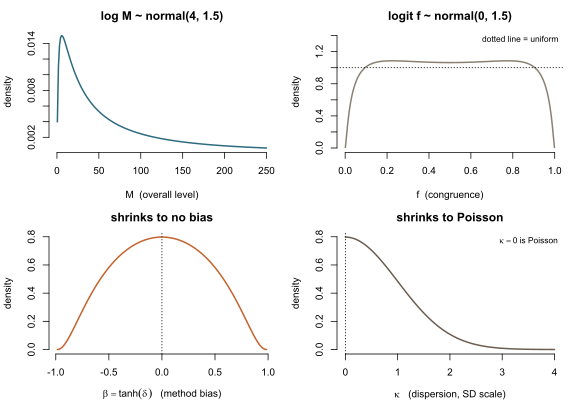

The anatomy of a paired count
Source:vignettes/articles/paired-count-anatomy.Rmd
paired-count-anatomy.RmdEvery joint family in this package — bipois(),
binegbin(), and their censoring-aware counterparts
bipois_joint() and binegbin_joint() — is built
by trivariate reduction (Holgate 1964; Karlis and Ntzoufras 2003). Three
independent counts are drawn, and the two observed counts share one of
them:
The shared term is what makes the pair correlated. It is never observed, and is marginalised out analytically in the likelihood. Everything else is the part each source saw alone.
The widget below decomposes a pair, exposing two coordinate systems at once, each driving the other.
Why two coordinate systems
The dpars a family actually takes are three rates — mu
for the shared component, lambdaone and
lambdatwo for the two excesses. That is what the likelihood
consumes, but it is awkward to reason in: raise the overall level of
counting and all three move together, so no single one of them answers
“how much was there”, “how much did the two sources agree”, or “which
source ran high”.
Those three questions have their own coordinates:
| overall level | ||
| congruence — the share of both sources saw | ||
| source bias, bounded on |
The map between them is a bijection, so neither set is more “real” — they are two descriptions of one object. Drag anything below and watch the other five respond.
Interpretable coordinates
Native dpars (what binegbin() takes)
Things to try
Turn f up towards 1. Both excess rates
fall to zero and the two bars converge — the sources agree completely.
Now notice what happens to
:
it stops meaning anything. There is no excess left to be biased, so the
bias is unidentified, and the widget flags it and holds the
last value rather than snapping to zero. Zero would be a claim (the
methods are unbiased) that the state cannot support.
Drag lambdaone alone.
,
and
all move, because changing one excess rate changes the overall level,
the shared share, and the imbalance simultaneously. This is
exactly why the native coordinates are awkward to reason in, and it is
much easier to see than to describe.
Turn up and watch . The two bars separate, but the rule does not move — it stays at their average, touching neither. The average of the two excess rates is for any , so is pinned to the midpoint whatever the bias. is a midpoint of what the sources report, not a property of the underlying process.
Compare against . They are near-orthogonal channels. moves the pair up and down together — it cannot touch the difference, because the shared component cancels from it. pulls the pair apart, and drives the whole difference.
Push to 0. The counts do not stop moving. That is the Poisson floor, not determinism: there is no parameter setting that stills the stacks.
The same map, in R
The widget’s arithmetic is not a separate model — it is the package’s own map, which you can call directly. This is the authoritative version, and it is what the JavaScript above is checked against:
library(bicountbrms)
# The widget's defaults
binegbin_mfd_to_dpars(M = 12, f = 0.67, delta = atanh(0), kappas = 0.6, kappax = 1.0)
#> $mu
#> [1] 8.04
#>
#> $lambdaone
#> [1] 3.96
#>
#> $lambdatwo
#> [1] 3.96
#>
#> $shapes
#> [1] 2.777778
#>
#> $shapex
#> [1] 1delta is the unbounded log-ratio bias; the widget’s
is the bounded
.
Going back the other way:
d <- binegbin_mfd_to_dpars(M = 12, f = 0.67, delta = 0.3)
binegbin_dpars_to_mfd(d$mu, d$lambdaone, d$lambdatwo)[c("M", "f", "delta", "beta")]
#> $M
#> [1] 12
#>
#> $f
#> [1] 0.67
#>
#> $delta
#> [1] 0.3
#>
#> $beta
#> [1] 0.2913126And the degenerate case the widget flags:
# Perfect congruence: no excess, so no bias to identify
binegbin_dpars_to_mfd(mu = 12, lambdaone = 0, lambdatwo = 0)$delta
#> [1] NAFitting in these coordinates
Nothing above fits anything — those are coordinate transforms. To fit in you do not need a different family: the reparameterisation is reachable through a non-linear formula, with
Every dpar is log-linked, so each formula below is written on the log
scale and the link supplies the exp(). That includes the
two dispersions: writing shapes as
gives
, so the model is estimated
in
— the SD-scale dispersion the widget above uses — rather than in
.
That is worth the detour, because it is what makes sensible priors available.
Priors that default to the simpler model
Three of these coordinates have a null at a finite, interpretable zero, which is the setting penalised-complexity priors are constructed for (Simpson et al. 2017): an exponential prior is placed on the distance from the base model, so the fit shrinks to the simpler model unless the data support the more complex one.
| coordinate | base model | prior |
|---|---|---|
(methd) |
— no method bias, | double_exponential(0, 0.5) |
(kappas) |
— Poisson shared component |
exponential(1),
|
(kappax) |
— Poisson private components |
exponential(1),
|
(con) |
none — deliberately, see below | normal(0, 1.5) |
Note what buys here. In the Poisson limit is , so there is no finite point to shrink towards and an exponential prior on would pull towards maximum overdispersion — precisely backwards. In the limit is , and the obvious prior does the obvious thing.
Those four transfer between datasets unchanged, because every one of them is scale-free: a log-ratio, two coefficient-of-variation-like quantities, and a proportion. None of them refers to how big the counts are.
Congruence is deliberately not shrunk either way.
Both ends of
are degenerate — at
there is no excess left, so
becomes unidentified; at
there is no shared component at all — and neither is a natural null for
a method comparison. normal(0, 1.5) on
is close to flat over the interior
(implied density within 10% of uniform across
)
while falling away at both boundaries, so it declines to take a
side.
The level is the one you have to set yourself
is the only coordinate on the counts’ own scale, so it is the only prior here that cannot have a universal default — set it from your own counts.
normal(4, 1.5) is used below, which covers roughly 3 to
1000 counts per sampling unit and suits the simulated data. For sparser
data, lower the mean: normal(0, 2) covers about 0.04 to
27.
Move the mean to match your scale rather than
raising the SD. eta is
,
so a normal prior on it is a lognormal on
,
and widening one pushes mass out to implausible values instead of making
it neutral (Smith et al.
2020, supplement 3).
A prior is weakly informative only on the scale it is stated on. These are stated on the linear-predictor scale — , — so what matters is the density they imply after the change of variables, on the scale being interpreted. Those implied densities are plotted below, with shown as the bounded bias , the fractional imbalance of excess between the two sources:
dlaplace <- function(x, b) exp(-abs(x) / b) / (2 * b)
op <- par(mfrow = c(2, 2), mar = c(4.1, 4.1, 2.6, 1.1), bty = "n")
# eta ~ normal(4, 1.5) on log M => M is lognormal
M <- seq(0.5, 250, length.out = 200)
plot(M, dlnorm(M, 4, 1.5), type = "l", lwd = 2, col = "#2D6A7F",
xlab = "M (overall level)", ylab = "density",
main = "log M ~ normal(4, 1.5)")
# con ~ normal(0, 1.5) on logit f => Jacobian 1 / (f (1 - f))
f <- seq(0.001, 0.999, length.out = 200)
plot(f, dnorm(qlogis(f), 0, 1.5) / (f * (1 - f)), type = "l", lwd = 2,
col = "#8A8072", ylim = c(0, 1.4),
xlab = "f (congruence)", ylab = "density",
main = "logit f ~ normal(0, 1.5)")
abline(h = 1, lty = 3) # uniform, for comparison
mtext("dotted line = uniform", side = 3, line = -1.1, cex = 0.7, adj = 0.97)
# methd ~ double_exponential(0, 0.5) on delta; beta = tanh(delta)
beta <- seq(-0.985, 0.985, length.out = 200)
plot(beta, dlaplace(atanh(beta), 0.5) / (1 - beta^2), type = "l", lwd = 2,
col = "#C4622D",
xlab = expression(beta == tanh(delta) ~ " (method bias)"),
ylab = "density", main = "PC prior: shrinks to no bias")
abline(v = 0, lty = 3)
# kappas, kappax ~ exponential(1); kappa = 0 IS the Poisson limit
k <- seq(0, 4, length.out = 200)
plot(k, dexp(k, 1), type = "l", lwd = 2, col = "#6B5D4F",
xlab = expression(kappa ~ " (dispersion, SD scale)"),
ylab = "density", main = "PC prior: shrinks to Poisson")
abline(v = 0, lty = 3)
mtext(expression(kappa == 0 ~ "is Poisson"), side = 3, line = -1.1,
cex = 0.7, adj = 0.97)
plot of chunk prior-pushforward
par(op)The two penalised-complexity priors concentrate mass at the null and decay away from it. The prior on is flat across the interior and declines only where the model degenerates. None is tight enough to dominate 400 observations; the fit below tests that.
Simulate a pair of counts from known coordinates:
library(brms)
library(bicountbrms)
set.seed(20260731)
M_true <- 12
f_true <- 0.67
d_true <- 0.3
ks_true <- 0.5
kx_true <- 0.6
truth <- binegbin_mfd_to_dpars(
M = M_true,
f = f_true,
delta = d_true,
kappas = ks_true,
kappax = kx_true
)
n <- 400
Ns <- rnbinom(n, size = truth$shapes, mu = truth$mu)
dat <- data.frame(
y1 = Ns + rnbinom(n, size = truth$shapex, mu = truth$lambdaone),
y2 = Ns + rnbinom(n, size = truth$shapex, mu = truth$lambdatwo)
)
unlist(truth)
#> mu lambdaone lambdatwo shapes shapex
#> 8.040000 5.113598 2.806402 4.000000 2.777778Fit. Every prior either shrinks towards the simpler model or sits away from the truth, so what comes back is carried by the data rather than echoed from the prior:
fit <- brm(
bf(y1 | vint(y2) ~ 1, nl = TRUE) +
nlf(mu ~ eta + log_inv_logit(con)) +
nlf(lambdaone ~ log(2) + eta + log_inv_logit(-con) + log_inv_logit( 2 * methd)) +
nlf(lambdatwo ~ log(2) + eta + log_inv_logit(-con) + log_inv_logit(-2 * methd)) +
nlf(shapes ~ -2 * log(kappas)) +
nlf(shapex ~ -2 * log(kappax)) +
lf(eta ~ 1, con ~ 1, methd ~ 1, kappas ~ 1, kappax ~ 1),
family = binegbin(),
stanvars = binegbin_stanvars(),
data = dat,
prior = c(
prior(normal(4, 1.5), class = "b", nlpar = "eta"),
prior(normal(0, 1.5), class = "b", nlpar = "con"),
prior(double_exponential(0, 0.5), class = "b", nlpar = "methd"),
prior(exponential(1), class = "b", nlpar = "kappas", lb = 0),
prior(exponential(1), class = "b", nlpar = "kappax", lb = 0)
),
chains = 2,
iter = 2000,
warmup = 1000,
refresh = 0,
seed = 20260731
)The coordinates come back off the posterior directly —
eta exponentiates to
,
con inverse-logits to
,
and methd and the two kappas are the
coordinates themselves, with no transformation needed:
post <- as_draws_df(fit)
qi <- function(x) c(median(x), quantile(x, c(0.05, 0.95)))
recovered <- rbind(
M = qi(exp(post$b_eta_Intercept)),
f = qi(plogis(post$b_con_Intercept)),
delta = qi(post$b_methd_Intercept),
kappas = qi(post$b_kappas_Intercept),
kappax = qi(post$b_kappax_Intercept)
)
colnames(recovered) <- c("median", "q5", "q95")
knitr::kable(
cbind(truth = c(M_true, f_true, d_true, ks_true, kx_true), recovered),
digits = 3
)| truth | median | q5 | q95 | |
|---|---|---|---|---|
| M | 12.00 | 12.178 | 11.749 | 12.646 |
| f | 0.67 | 0.659 | 0.601 | 0.709 |
| delta | 0.30 | 0.279 | 0.222 | 0.347 |
| kappas | 0.50 | 0.510 | 0.447 | 0.588 |
| kappax | 0.60 | 0.536 | 0.423 | 0.665 |
Because the map is a bijection, the same posterior can be read in
native dpars without refitting — push the draws back through
[binegbin_mfd_to_dpars()][binegbin_mfd_to_dpars]:
back <- binegbin_mfd_to_dpars(
M = exp(post$b_eta_Intercept),
f = plogis(post$b_con_Intercept),
delta = post$b_methd_Intercept
)
knitr::kable(
data.frame(
dpar = c("mu", "lambdaone", "lambdatwo"),
truth = c(truth$mu, truth$lambdaone, truth$lambdatwo),
median = vapply(back, median, numeric(1))
),
digits = 3,
row.names = FALSE
)| dpar | truth | median |
|---|---|---|
| mu | 8.040 | 8.017 |
| lambdaone | 5.114 | 5.305 |
| lambdatwo | 2.806 | 3.015 |
The reason to bother with any of this: putting a random effect on
eta asks whether groups differ in overall level, and
putting one on con asks whether they differ in congruence.
Those are separable questions in these coordinates and entangled ones in
the native dpars, where a group effect on mu alone changes
the level and the congruence at once.
A caveat about the widget
The JavaScript is an independent implementation of the
generative model — it draws from the same trivariate reduction,
but it is not the likelihood, and no part of the package’s inference
runs in your browser. The rate map it uses is the one tested in
test-mfd.R; the sampler is illustrative. Treat the picture
as intuition, and the R above as the specification.